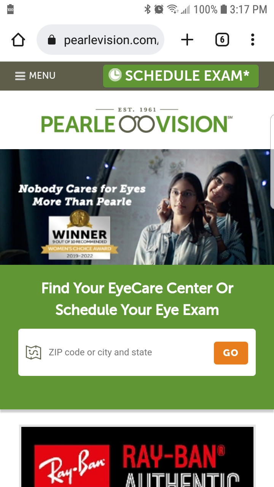

Hick's Law
Amazon |
| https://www.amazon.com |
| Amazon is probably the best example of any design principle that you want to talk about as they are the Diamond Standard of website desgin. For my example, I have chosen to use them as an example of Hick's Law because of the way that they use thier layout and their menu system to try to limit the number of choices, thereby speeding up the customer's buying experience. First, they put their search bar top and center of the page. This encourages those buyers who already know what they're looking for to go here and type in the name of their item. Failing that, the menu is designed to first offer only a limited number of choices to the customer from which they choose. This then gives them another, topic-focused menu, and so on until they have reached the item that they want. |
Fitt's Law
YouTube (Google) |
| https://www.youtube.com |
| When considering Fitt's Law in web design, you need to look out how the buttons and interactive portions of the website work together to enhance the user's experience. YouTube does this masterfully. With their most popular menu items right at the topp of the mobile page, you get to the content that you want fast and with little fuss. Beyond that, popular vidoes that match your watch patterns are nearest to the top of the page, making the distance that needs to be traveled only as long as your attention span. |
The Rule of Thirds
Pearle Vision |
| https://www.pearlevision.com |
|  |
| I know that the mobile image is small, but look at the first image on the mobile home page for Pearle Vision (ironically, a company concerned primarily with how we see things!). Dividing this picture with the 3x3 grid that was refenced in the articles that I read shows us that this image is composed to make sure that the user's eye is drawn to certain things in a certain order. First (and most important) is in the top left of the image and is the company's message, "Nobody cares for eyes more than Pearle." This lets the visitor to this site know that Pearle cares about them, and more importantly, about their vision. Second is the fact that Pearle Vision has won a major award. This is called out in the second most "viewed" part of the image, the bottom left quadrant. And then lastly, in the top right area, is an image of two apparently very happy customers who are able to see better because they went to Pearle. And it doesn't hurt that they are young and attractive, because we want to be seen as young(ish) and attractive, don't we? |